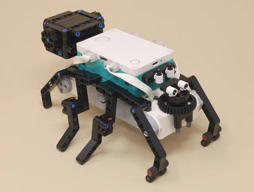

Spider
The autonomous program makes it stalk slowly then run, and the remote control program allows you to control all of its motions with a D-pad and other controls.

Spider | |
|---|---|
|  |
This creepy spider builds onto the 4-Motor Walker to make a walking spider with eight legs. All eight legs move, and the spider can creep slowly... or attack with a run!
The autonomous program makes it stalk slowly then run, and the remote control program allows you to control all of its motions with a D-pad and other controls. |
|
|
All eight legs move, in an alternating left/right front/back pattern to make it creep forward, or even run! |
Building Instructions |
|
|---|---|
 | 1 4-Motor Walker |
| 2 Spider |
Programming |
|
|---|---|
 | Spider Programming.zip |
 | 1 Spider Auto.lms |
| 2 Spider RC.lms |
 |
Spider Auto
This autonomous program makes the spider creep forward a few times then charge forward with a run. |
 |
Spider RC (1 of 2)
This remote control program allows you to control the spider with a D-pad to make it walk in 4 different directions, a yellow Run button to make it charge quickly forward, and a switch to toggle it between ready and resting modes. In resting mode (switch off), the spider stands straight with all 8 legs on the ground and the movement controls are disabled. Turn the swtich on to get the spider ready to move. |
 |
Spider RC (2 of 2)
This second page of the remote control program defines the various My Blocks that the program uses. |